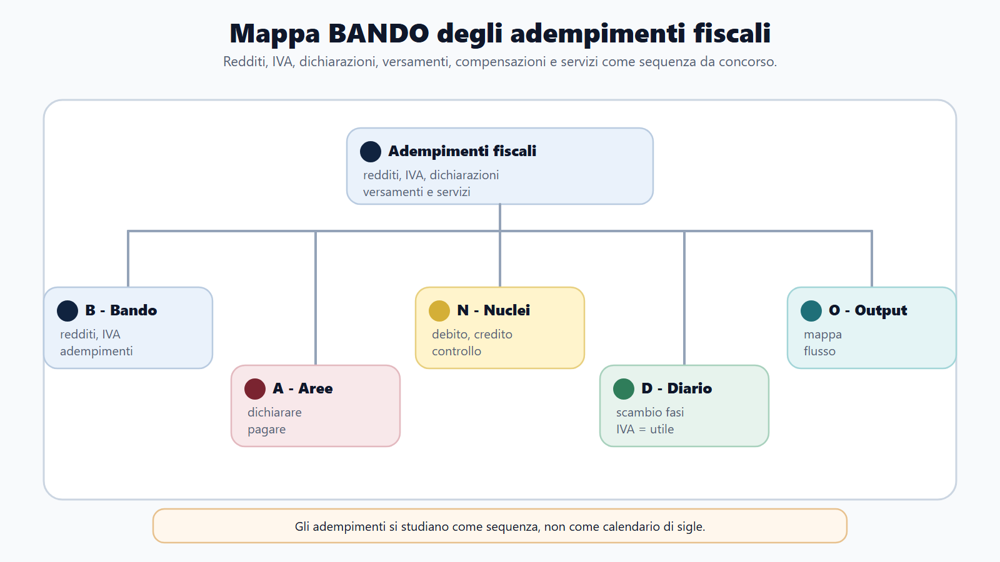
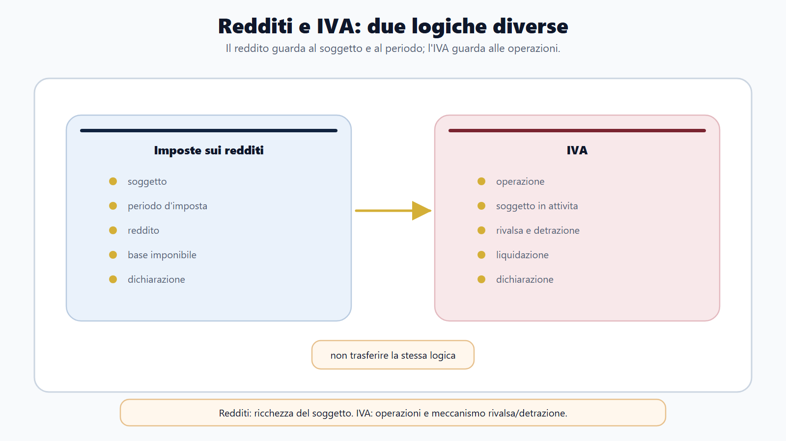
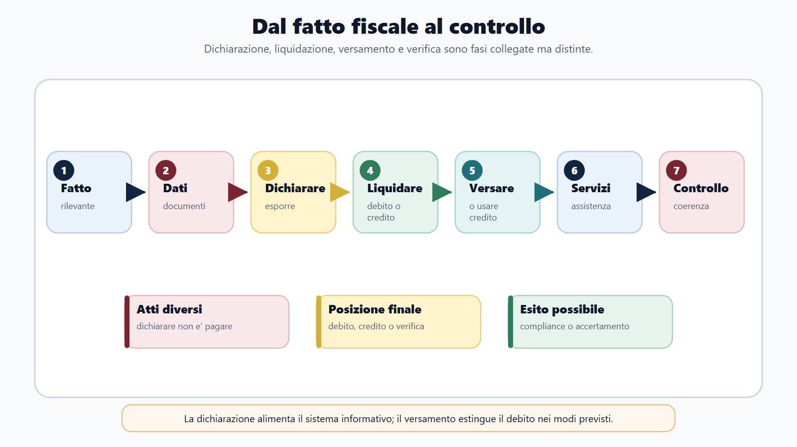
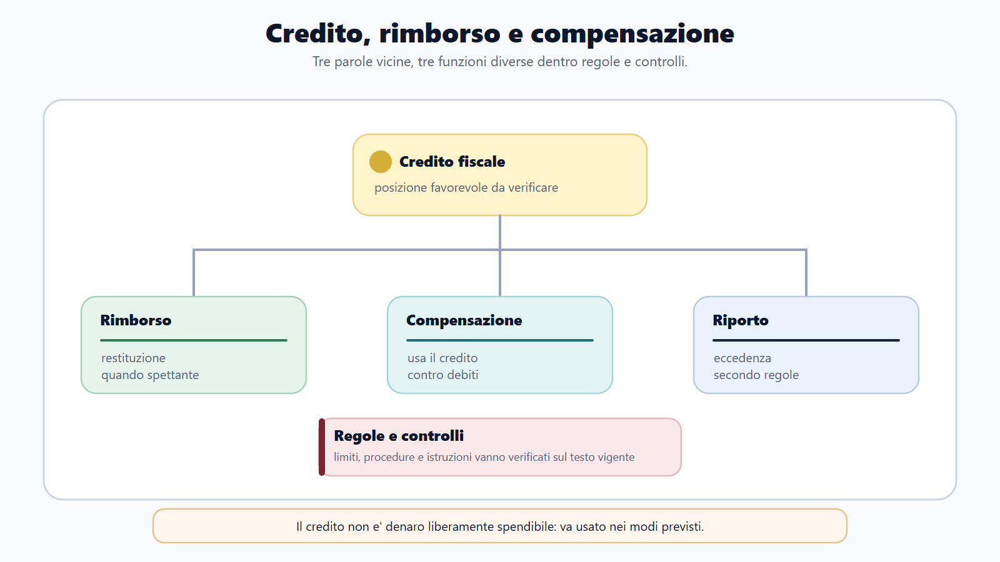

VOL-03 · Capitolo 23
M-FC02
Adempimenti fiscali:
redditi, IVA, dichiarazioni
Un tributo non si esaurisce nella regola che lo istituisce. Per il contribuente e per l’amministrazione quella regola diventa una sequenza: qualificare il fatto, documentarlo, liquidare, dichiarare, versare e conservare gli elementi che rendono il percorso verificabile.
01 · Il problema in prova
Dichiarare non è pagare
Dichiarazione, liquidazione, versamento e controllo sono momenti collegati, ma svolgono funzioni diverse. La dichiarazione espone i dati. La liquidazione calcola il risultato. Il versamento esegue l’obbligazione. Il controllo verifica la correttezza del percorso.
Che cos’è l’adempimento
Una serie ordinata di comportamenti: qualificare il fatto, documentarlo, determinare la base, liquidare l’imposta, dichiarare, versare e conservare la prova. Non è un unico modello da compilare.
A che serve in prova
A leggere redditi e IVA con mappe diverse, a separare reddito, base e imposta, e a ricostruire un caso dal fatto economico fino all’eventuale controllo, senza partire dal modulo o dalla sanzione.
Si parte dalla fattispecie, non dal risultato.
Fattispecie, qualificazione, dichiarazione, liquidazione, versamento, eventuale controllo. Saltare un passaggio produce la scorciatoia tipica: vedere un mancato pagamento e parlare subito di riscossione, o vedere una fattura e calcolare l’IVA senza soggetto e operazione.
02 · BANDO
Cinque decisioni su questo capitolo
Il bando indica quanto approfondire. La sequenza dà ordine allo studio, così non si legge il TUIR in modo indiscriminato e non si riduce l’IVA a un calcolo percentuale.
| Che cosa fai | Se la salti | |
|---|---|---|
| B — Bando | Verifica se il programma richiede TUIR, IVA, dichiarazioni, versamenti o servizi fiscali. | Studi un elenco di modelli senza profondità di prova. |
| A — Aree | Colloca il quesito in redditi, operazioni IVA, adempimenti o controllo. | Mischi IRPEF, IRES e IVA nello stesso ragionamento. |
| N — Nuclei | Tieni ferma la mappa: soggetto, fatto, base, imposta, dichiarazione, pagamento. | Parti dal risultato finale. |
| D — Diario | Registra la confusione precisa: dichiarazione=pagamento, esente=fuori campo, credito=rimborso. | Ripeti le tre trappole all’orale. |
| O — Output | Risposta orale, classificazione, sequenza o mini-caso. | Elenco di articoli senza decisione. |
03 · Mappa
Dal bando al ciclo dell’adempimento
La mappa taglia il superfluo. Chi studia i modelli senza qualificare il fatto perde il tributo. Chi studia la norma senza dichiarazione, liquidazione e versamento resta teorico.

Qualificazione, dichiarazione, liquidazione, versamento e controllo: funzioni collegate, non intercambiabili.
04 · Ciclo
Sette domande per aprire ogni caso
Lo schema non descrive una procedura identica per ogni tributo. Adempimenti periodici, annuali e legati a singole operazioni seguono discipline proprie. Lo schema comune indica dove intervengono le differenze.
| Momento | Funzione | Errore da evitare |
|---|---|---|
| Qualificazione | Collega il fatto alla disciplina. | Partire dal modello senza capire il fatto. |
| Documentazione | Rende ricostruibili dati e operazioni. | Considerarla estranea al tributo. |
| Dichiarazione | Rappresenta i dati rilevanti. | Scambiarla per il pagamento. |
| Liquidazione | Determina debito, credito o saldo. | Confonderla con l’accertamento. |
| Versamento | Esegue l’obbligazione pecuniaria. | Credere che esaurisca ogni obbligo dichiarativo. |
| Controllo | Verifica coerenza e correttezza. | Trattarlo come riscossione. |
05 · Redditi
Qualificare prima di calcolare
L’IRPEF riguarda le persone fisiche. L’art. 6 TUIR distingue sei categorie. La classificazione non è un’etichetta: seleziona regole di determinazione, periodo di imputazione, trattamento delle perdite e raccordo con il reddito complessivo. Residenza fiscale e cittadinanza non sono sinonimi.
| Categoria | Che cosa verifica | Errore tipico |
|---|---|---|
| Fondiari | Bene, ubicazione, catasto, titolo; eventuale attrazione nell’impresa o art. 67. | «Qualsiasi somma collegata a un immobile». |
| Capitale | Fattispecie tipizzata dell’impiego; non è il guadagno dell’art. 67. | «Deriva da denaro investito». |
| Dipendente | Dipendenza e direzione altrui; onnicomprensività con esclusioni. | Il solo nome del contratto. |
| Autonomo | Abitualità, autonomia, natura professionale; distinta da impresa e occasionale. | Ogni attività senza datore. |
| Impresa | Attività, abitualità, organizzazione; per le società commerciali l’intero reddito. | Somma di incassi meno pagamenti. |
| Diversi | Residuale e tipizzata: serve una fattispecie dell’art. 67. | «Occasionale» come sinonimo universale. |
06 · Due logiche
Redditi e IVA non si studiano allo stesso modo
Nei redditi si identifica il soggetto, si qualifica ciascun provento, si applicano determinazione e imputazione della categoria e solo dopo si costruiscono reddito complessivo, imponibile e imposta. Nell’IVA si segue l’operazione: cessione o prestazione, territorialità, classe, esigibilità, rivalsa e detrazione.
Redditi per categoria → reddito complessivo → deduzioni → imponibile → imposta lorda → detrazioni e scomputi → imposta netta. La deduzione riduce la grandezza reddituale; la detrazione riduce l’imposta lorda.
Due mappe operative: prima la qualificazione, poi il calcolo. Aliquote e soglie restano dati da verificare.

07 · IRES
Utile di bilancio e imponibile non coincidono
Per una società commerciale residente l’art. 81 qualifica il reddito complessivo come reddito d’impresa. Il punto di partenza è l’utile o la perdita del conto economico, corretto dalle variazioni in aumento o in diminuzione. La dichiarazione rettifica il risultato ai fini fiscali: non riscrive il bilancio.
Come funziona
Una variazione in aumento può neutralizzare un costo contabilizzato ma indeducibile. Una variazione in diminuzione può sottrarre un componente non imponibile o riconoscere una deduzione in un periodo diverso. Competenza fiscale e incasso restano distinti.
Esempio pedagogico
Utile 100, costo indeducibile 12, componente non imponibile 5: imponibile didattico 107. I numeri allenano il metodo, non sono soglie o aliquote vigenti. Prima il soggetto, poi ogni differenza, poi la dichiarazione.
Equiparare utile, imponibile, incasso e liquidità, o descrivere l’inerenza come testo letterale dell’art. 109. La sintesi «collegamento qualitativo con l’attività» è interpretativa: esistenza, documentazione, riferibilità, periodo e deducibilità restano controlli distinti.
08 · IVA
Quattro classi, non «senza IVA»
Prima si classifica cessione o prestazione, soggetto passivo e territorialità. Poi si domanda se la natura concreta attiva una deroga. «Senza IVA» non è una quinta classe.
| Classe | Inquadramento | Conseguenza essenziale |
|---|---|---|
| Imponibile | Ricorrono i presupposti e si applica il regime ordinario. | L’imposta è addebitata e confluisce nella liquidazione. |
| Non imponibile | Nel sistema IVA, ma la legge non applica l’imposta, spesso per destinazione. | In linea generale conserva il diritto a detrazione, da verificare. |
| Esente | Rientra nel campo IVA e beneficia di un’esenzione tipizzata. | Può limitare la detrazione; non equivale a non imponibilità. |
| Esclusa o fuori campo | Manca un presupposto oppure una norma sottrae la fattispecie. | Non va trattata come operazione esente. |
Per i servizi, in via generale B2B guarda al committente, B2C al prestatore. Immobili, trasporti, eventi, ristorazione e servizi elettronici possono seguire criteri speciali. Territorialità estera non significa automaticamente «nessun adempimento».
09 · Liquidazione IVA
Rivalsa, detrazione, registri
La rivalsa è l’addebito al cliente. La detrazione è il diritto, alle condizioni di legge, di sottrarre l’imposta sugli acquisti ammessi. Non è un rimborso né una compensazione automatica. Fattura, registro e liquidazione non sono duplicati dello stesso atto.
Documento
Descrive parti, oggetto, momento, base e imposta.
Registri
Vendite: debito. Acquisti: detrazione solo se esiste il diritto.
Liquidazione
IVA esigibile meno IVA detraibile ammessa: debito o eccedenza.
Registro vendite 900; registro acquisti 500, di cui 80 senza diritto. Detrazione ammessa 420, debito 480. Sottrarre tutti i 500 è un errore di detrazione. I valori allenano il calcolo: non sono aliquote vigenti.
10 · Dichiarazioni
Originaria, correttiva, integrativa, omessa
L’originaria è la prima dichiarazione validamente presentata. Se ne viene trasmessa un’altra entro il termine ordinario, la qualificazione come correttiva dipende anche dalle istruzioni del modello. Dopo il termine, l’integrativa corregge errori nei limiti di legge. «Integrativa» non significa credito immediatamente spendibile.

Dichiarazione, versamento e controllo sono collegati. Il pagamento non dimostra che ogni obbligo dichiarativo sia stato adempiuto.
11 · Credito
Riporto, compensazione, rimborso
Prima di usare un credito si verificano esistenza, spettanza, disponibilità, perimetro (verticale o orizzontale), cause ostative, controlli e modalità. Un credito esposto non supera da solo questi gate. Il versamento unitario F24 organizza debiti e crediti: non crea il credito.
| Destinazione | Funzione |
|---|---|
| Riporto | Mantiene l’eccedenza nel circuito IVA nei periodi successivi. |
| Compensazione | Usa il credito, verticale o orizzontale, se esistente, spettante e disponibile. |
| Rimborso | Solo nei casi e alle condizioni previsti, con percorso dichiarativo e di controllo. |
Tre destinazioni diverse: il saldo a credito non genera automaticamente denaro.

12 · Caso guidato
Tre problemi, due tributi
Una piccola società presta servizi e riceve fatture per acquisti inerenti. Al termine del periodo: una fattura attiva non è in liquidazione IVA; un costo è classificato senza verificarne il trattamento reddituale; il versamento non coincide con il risultato ricostruito.
| Passaggio | Ragionamento |
|---|---|
| Separare i tributi | L’operazione attiva entra nel circuito IVA. Il costo entra nel circuito dei redditi. |
| Partire dai documenti | Non si parte dalla somma versata per dedurre ciò che avrebbe dovuto essere dichiarato. |
| Ricalcolare | Ricostruire operazioni e liquidazione IVA; verificare il trattamento del componente reddituale. |
| Classificare gli scostamenti | Errore documentale, dichiarativo e di pagamento non sono automaticamente lo stesso errore. |
| Collocare il controllo | Un’incoerenza può generare un’anomalia: non prova da sola una violazione e non è riscossione. |
13 · Verifica
Due domande da saper spiegare
Funzione della dichiarazione, distinta da liquidazione e versamento
La dichiarazione espone dati ed elementi fiscalmente rilevanti. La liquidazione applica le regole e determina il risultato. Il versamento esegue l’obbligazione pecuniaria. Qualificazione e documentazione precedono la dichiarazione; il controllo può seguire. I tre momenti si collegano senza coincidere.
Ha presentato la dichiarazione: è assolto anche il versamento?
No. La presentazione non prova che la somma sia stata versata correttamente, così come il pagamento non dimostra che ogni obbligo dichiarativo sia stato adempiuto. Non imponibile ed esente non coincidono. Un credito dichiarato non è sempre compensabile.
14 · Mini-esercizio
Scheda su una prestazione o cessione
Completa i campi e trasformali in una risposta orale con i verbi qualificare, documentare, dichiarare, liquidare, versare e controllare. Non cercare un unico importo.
| Campo | Che cosa scrivere |
|---|---|
| Fatto e soggetto | Che operazione è avvenuta e chi agisce come soggetto passivo o percettore. |
| Profilo redditi | Categoria TUIR, o reddito d’impresa se società commerciale residente. |
| Profilo IVA | Cessione o prestazione, territorialità, classe, rivalsa e detrazione. |
| Documento e dato | Fattura o documento previsto; che cosa entra in dichiarazione. |
| Liquidazione e saldo | Debito, credito, versamento o compensazione, con i sei gate se c’è un credito. |
Assistere non significa decidere fuori competenza. Identificare la richiesta, verificare identità e competenza, spiegare il percorso, non anticipare l’esito di un controllo e non confondere Agenzia delle Entrate e AdER.
15 · Da tenere ferme
Cinque regole, con il perché
1. Si parte dalla fattispecie: fatto, soggetto, tributo e trattamento. Il modello viene dopo.
2. Dichiarazione, liquidazione e versamento hanno funzioni diverse: esporre, calcolare, pagare.
3. La categoria reddituale seleziona determinazione e imputazione; i redditi diversi sono residuali e tipizzati.
4. Nell’IVA distinguere imponibile, non imponibile, esente e fuori campo; rivalsa e detrazione non coincidono.
5. Compensazione e rimborso richiedono presupposti. Controllo, accertamento e riscossione restano fasi successive e sedi distinte.
16 · Errori da diario
Sei scorciatoie da registrare
| Errore | Segnale | Correzione |
|---|---|---|
| Dichiarazione = pagamento | «Ha dichiarato, quindi ha pagato». | Separo dato comunicato e somma versata. |
| Reddito = base = imposta | Uso i termini per lo stesso importo. | Ricostruisco determinazione, base e imposta. |
| IVA = aliquota | Salto operazione e documento. | Ripasso rivalsa, detrazione e liquidazione. |
| Detrazione automatica | Non verifico i presupposti. | Aggiungo «quando ricorrono le condizioni». |
| Anomalia = evasione | Tratto lo scostamento come prova. | Distinguo dato, controllo e valutazione. |
| Mancato versamento = cartella | Salto le fasi intermedie. | Separo adempimento, accertamento e riscossione. |
Prossimo capitolo
Riscossione nazionale e lavoro in AdER
L’adempimento è ricostruito. Il capitolo successivo apre il fascicolo quando il credito deve essere incassato: ente creditore, ruolo, cartella, rateizzazione. La riscossione non coincide con la decisione che il credito esiste.